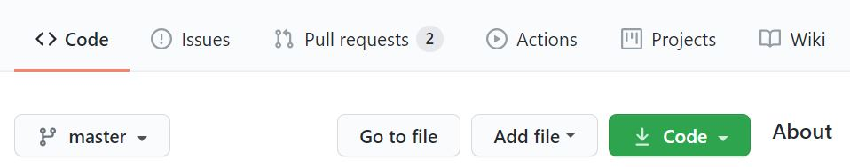
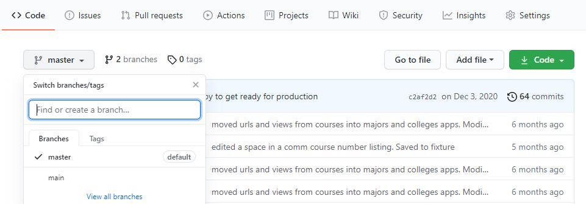
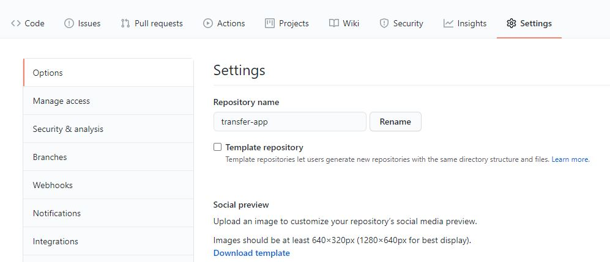
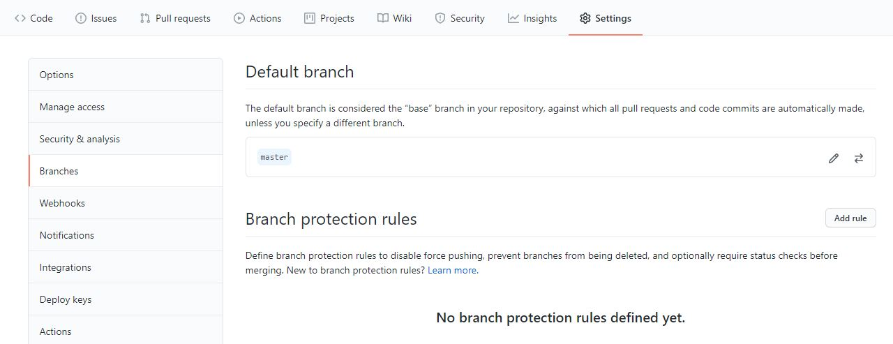
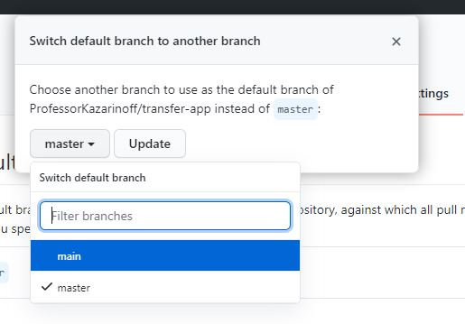
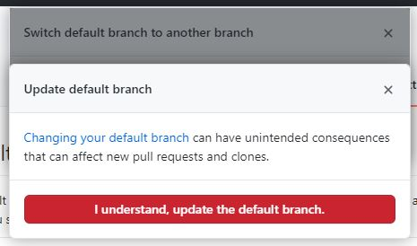
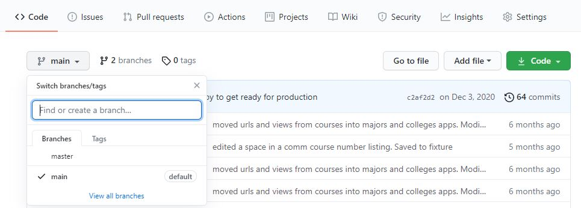
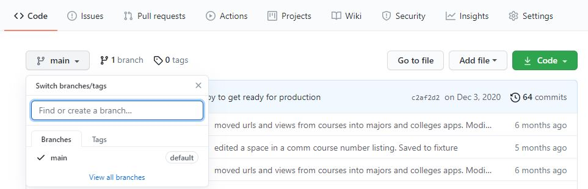

This post is for anyone who wants to change their GitHub repos from master to main. GitHub changed the default repo branch name to main. I want to change all my GitHub repo's default branch from master to main.
The short version
If you are comfortable with git and the command line, use the commands below. If you need some help and explanation, read on.
git branch -m master main
git push -u origin main
git symbolic-ref refs/remotes/origin/HEAD refs/remotes/origin/main
# change default branch on GitHub
git push origin --delete master
Why does it matter if I use main?
The reason to use the name main as the default branch on Github and in your local git repos is that it's the right thing to do.
Language in programming, like master, that supports symbols of racism has no place. That's the main reason. In addition, the name main just makes more sense. Is the master branch in charge of anything? Are other branches subservient to it? And a very practical reason is that since GitHub moved to use main as the default branch, you have to remember when to use git push origin main and when to use git push origin master on a repo-to-repo basis. This is confusing and leads to creating new branches that you don't want. So change all of your GitHub repo names to main.
Step 1
Create a new main branch locally, taking the history from master
The first step is to create a new branch locally (on your computer) called main. You can see which branch you are on using the command below:
git branch -a
If you are on a branch called master, the output will look something like below:
* master
remotes/origin/master
Next, run the command below to create a new branch called main and copy all the history from the master branch into the new main branch. The -m flag stands for --move, which means move the entire history onto the new branch main from the old branch master.
git branch -m master main
After you create the new main branch, you can run the git branch -a command again and you should see output similar to below.
* main
remotes/origin/master
Step 2.
Push the new main branch up to Github
Next, we need to push the new main branch up to Github. If you look at GitHub now, you can see under the branch dropdown menu that master is the default branch.

Run the command below to push the main branch up to GitHub.
git push -u origin main
You may see a message like the one below in your terminal as a result.
* [new branch] main -> main
Branch 'main' set up to track remote branch 'main' from 'origin'.
If you type git branch -a again, now you should see two remote branches, one called main and one called master.
* main
remotes/origin/main
remotes/origin/master
If you go back to GitHub and look at the branch name dropdown (you may have to refresh the webpage), you should now see there are two branches main and master.

Step 3.
Switch HEAD to the main branch
Next, we are going to switch the HEAD of our git repo onto the main branch (from the master branch). HEAD is currently attached to master so if we make any changes to the main branch, we'll be ahead of the head. That's not good and leads to git problems that I don't know how to deal with.
Type the command below to switch HEAD to the main branch.
git symbolic-ref refs/remotes/origin/HEAD refs/remotes/origin/main
There won't be any output after running the command. But if you type git branch -a you should see output like below:
* main
remotes/origin/HEAD -> origin/main
remotes/origin/main
remotes/origin/master
Step 4.
Change the default branch on GitHub to main
You need to do this on GitHub, not on your local computer.
If you go to the main repo page on GitHub and select the branches dropdown menu, you will see two branches listed and a checkmark next to master. We are going to change it so the default repo and the checkmark are next to the main branch.
On the main page for your repo, click on settings.

Then on the lefthand menu, click on branches

Next, click the arrows to change the default branch

Accept the warning

After the default branch change, you can go back to the main repo page and see that main is now the default branch.

Nice job! One more step to get, we just need to get rid of the master branch so that the main branch is the only branch.
Step 5.
Delete the master branch on Github.
Now that we have a main branch on our local computer, a main branch up on GitHub, and the default branch on GitHub is the main branch. The next step is to delete the master branch on GitHub. Right now, if you type the git branch -a command, you'll see output like below:
* main
remotes/origin/HEAD -> origin/main
remotes/origin/main
remotes/origin/master
We are going to delete remotes/origin/master
This can be accomplished by entering the command below.
git push origin --delete master
As a result, you'll see output similar to below:
To github.com:user-name/repo-name.git
- [deleted] master
If you go back to Github, refresh the page, and select the branch dropdown menu, you should see that the only branch listed is the main branch.

Now your master branch has been converted to main. If you run the command git status, you should see output like below.
On branch main
Your branch is up to date with 'origin/main'.
The output indicates that you are on the main branch and from now on you can use git push origin main and git pull origin main for this repo.
That's it! You're done. You have successfully moved your GitHub repo from master to main.
Bonus
What to default to main every time you create a new Git repo locally? Make sure you are on Git version 2.28 or above and use the command below.
git --version
# git version 2.28.0 or above
git config --global init.defaultBranch main
Support
Thanks for reading! If you want to support the open source work I do (like this blog), consider becoming one of my GitHub sponsors: